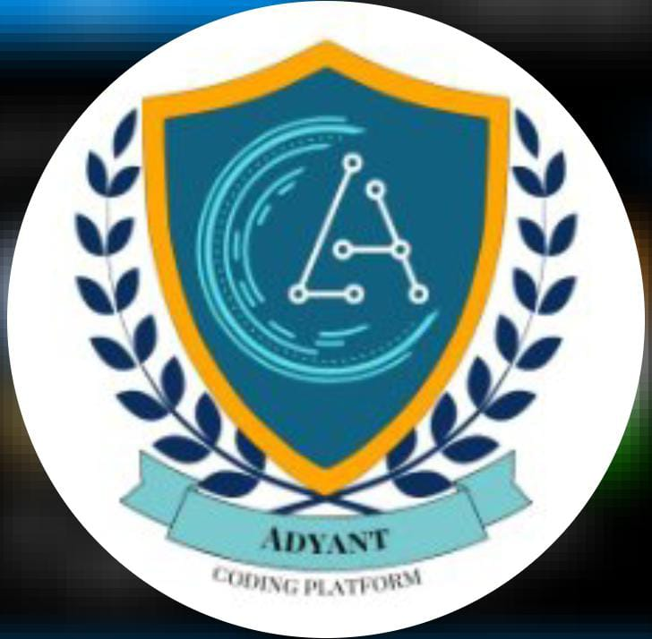

DevDynasty
Name of the club: Web Development ClubDepartment Incharge: IT
Description :
Replicating a webpage event involves recreating the functionality and user experience of a specific event or feature found on a webpage. This process typically requires understanding the event's behavior, coding the necessary HTML, CSS, and JavaScript components, and testing to ensure accuracy and responsiveness across different devices and browsers.
AI Club
Name of the club: AI ClubDepartment Incharge: AI & DS
Description :
The AI Club strives to promote understanding and application of artificial intelligence (AI) technologies. Members engage in discussions, workshops, and projects to explore machine learning, neural networks, natural language processing, and computer vision. The club aims to foster an environment where members can develop AI-driven solutions for various domains, from healthcare to finance, and contribute to cutting-edge research and innovation.

Department Incharge: CSE
Description :
The Coding Club is dedicated to fostering a vibrant community of programming enthusiasts. Through hands-on workshops, coding challenges, and collaborative projects, members explore diverse programming languages, algorithms, and software development practices. The club provides a supportive environment for honing technical skills, fostering creativity, and solving real-world problems through code. Members engage in peer-to-peer learning, mentorship programs, and industry connections, preparing them for careers in technology and software engineering.
Code Club
Name of the club: Code ClubDepartment Incharge: CSE
Description :
The Coding Club is dedicated to fostering a vibrant community of programming enthusiasts. Through hands-on workshops, coding challenges, and collaborative projects, members explore diverse programming languages, algorithms, and software development practices. The club provides a supportive environment for honing technical skills, fostering creativity, and solving real-world problems through code. Members engage in peer-to-peer learning, mentorship programs, and industry connections, preparing them for careers in technology and software engineering.

IOT Club
Name of the club: IOT ClubDepartment Incharge: ECE
Description : The IoT Club is dedicated to exploring the potential and applications of the Internet of Things (IoT) technology. Through workshops, projects, and seminars, members delve into sensor networks, data analytics, and IoT platforms. The club encourages innovation in creating connected systems that address real-world challenges across various domains, including healthcare, agriculture, and smart cities. Members collaborate on hands-on projects,discuss emerging trends, and share expertise to advance their understanding of IoT.
CAAD Club
Name of the club: CAAD ClubDepartment Incharge: EEE
Description :
The Computer-Aided Architectural Design (CAAD) Club focuses on integrating digital technologies into architectural design processes. Members explore software tools, such as AutoCAD, Revit, and SketchUp, to enhance design visualization, analysis, and communication. Through workshops, design charrettes, and guest lectures, the club facilitates hands-on learning experiences and promotes collaboration among architecture students and technology enthusiasts. The CAAD Club aims to bridge the gap between traditional architectural practices and emerging digital methodologies, empowering members to embrace technology as a catalyst for innovation in architectural design..
Renewable Club
Name of the club: Renewable ClubDepartment Incharge: Civil
Description :
The Renewables Club is committed to promoting awareness and understanding of renewable energy technologies and sustainability practices. Through workshops, seminars, and field trips, members explore renewable energy sources such as solar, wind, hydro, and biomass. The club engages in discussions about energy policy, environmental impact assessments, and renewable energy integration strategies. Through hands-on projects and community outreach initiatives, members advocate for renewable energy adoption and sustainable living practices.
Product Development Club
Name of the club: Product Development ClubDepartment Incharge: CSE
Description :
The Product Development Club aims to cultivate skills and knowledge related to the entire product lifecycle, from ideation to market launch. Through workshops, design sprints, and prototype building sessions, members learn about user-centered design, rapid prototyping, and product management methodologies. The club fosters interdisciplinary collaboration, encouraging members to explore various facets of product development, including market research, feasibility analysis, and user testing.